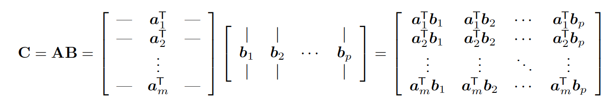
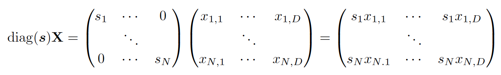

The product of A∈Rm×n and B∈Rn×p is AB=C with:
Cij=k=1∑nAikBkj Note that the number of columns of A must match the number of rows of B.
Matrix multiplication complexity averages O(mnp), faster methods exists (like BLAS) and hardware parallelizing the computation, like TPU or GPU.
- Matrix multiplication is associative: A(BC)=(AB)C
- Matrix multiplication is distributive: A(B+C)=AB+BC
- In general, it is not commutative: AB=BA
7.2.1 Vector-vector products
Inner product
Given two vectors x,y∈Rn, their size is (n,1). The inner product is the scalar:
⟨x,y⟩=x⊤y=i=1∑nxiyi Note that x⊤y=y⊤x
Outer product
Given two vectors x∈Rn and y∈Rm (they no longer have the same size), the outer product is a matrix Rn×m:
xy⊤=x1y1⋮xny1…⋱…x1ym⋮xnym
7.2.2 Vector-matrix products
Given matrix A∈Rm×n and x∈Rn, the product is y=Ax∈Rm
This can be viewed as inner product on rows:
y=a1⊤x⋮am⊤x Or linear combination on columns:
y=∣a1∣x1+⋯+∣an∣xn In this latter view, A is a set of basis vectors defining a linear subspace.
7.2.3 Matrix-matrix products
The main view is a inner product between row vectors of A and columns vectors of B:
If A∈Rn×m and B∈Rm×d, then C∈Rn×d
7.2.4 Matrix manipulations
Summing slices
Let X∈Rn×d, we can average rows of X by pre-multiplying a vector of ones:
xˉ⊤=N11N⊤X=[∑i=1nxi1…∑i=1nxid] Conversely, we can average columns by post-multiplying.
Hence, the overall mean is given by:
xˉ=ND11N⊤X1D Scaling
If we pre-multiply X by a diagonal matrix S, we scale each row by si:
Conversely, we scale columns by post-multiplying X with the diagonal matrix S
Therefore, the normalization operation can be written:
Xstd=(X−1Nμ⊤)diag(σ)−1 where μ is the empirical mean vector and σ the empirical standard deviation vector.
Scatter matrix
The sum of squares matrix S0∈RD×D is:
S0≜X⊤X=i=1∑Nxixi⊤ The scatter matrix Sxˉ∈RD×D is:
Sxˉ≜i=1∑N(xi−xˉ)(xi−xˉ)⊤=i=1∑Nxixi⊤−Nxˉxˉ⊤ The Gram matrix K∈RN×N is:
K≜XX⊤ The square pairwise distance between X∈Rm×d and Y∈Rn×d is:
Dij=∣∣xi−yj∣∣22=(xi−yj)⊤(xi−yj)=∣∣xi∣∣22−2xi⊤yj+∣∣yj∣∣22 This can also we written as:
D=x^1m−2XY⊤+1ny^ where x^=diag(XX⊤)
7.2.5 Kronecker products
A∈Rm×n and B∈Rp×q, then the Kronecker product belongs to Rmp×nq:
A⊗B=a11B⋮am1B…⋱…a1nB⋮amnB Some useful properties:
(A⊗B)—1=A−1⊗B−1
(A⊗B)vec(C)=vec(BCA⊤)
7.2.6 Einstein summation
Einsum consists in removing the ∑ operator for matrix and tensor products:
Cij=k∑AikBkj⇒AikBkj And for more complex operations:
Lnc=d∑k∑t∑SntkWkdVdc⇒SntkWkdVdc Einsum can perform computations in an optimal order, minimizing time and memory allocation.
{kind=link}
{kind=link}